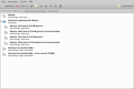
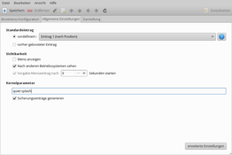
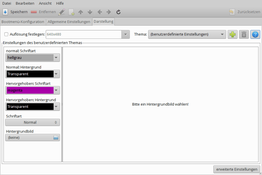
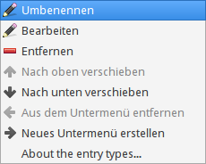
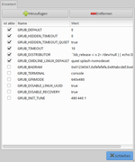
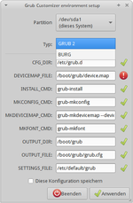

GRUB Customizer
Achtung!
Ein falsch konfigurierter Bootmanager kann dazu führen, dass das System nicht mehr startet! Unter Umständen hilft dann der Artikel GRUB 2/Reparatur weiter. Dennoch sollte man bei der Benutzung des Programms besondere Vorsicht walten lassen.
Dieser Artikel basiert auf dem Paket grub-pc für ältere BIOS-Rechner bzw. Installationen im BIOS-Modus. Auf modernen EFI-Systemen wird dagegen das Paket grub-efi-amd64 eingesetzt. Während das bei einfachen Aufgaben keine Rolle spielt, kann ein Neuschreiben des MBR (BIOS-Modus) ein EFI-System schwer beschädigen!
Dieser Artikel wurde für die folgenden Ubuntu-Versionen getestet:
Ubuntu 16.04 Xenial Xerus
Ubuntu 14.04 Trusty Tahr
Zum Verständnis dieses Artikels sind folgende Seiten hilfreich:
Der Grub Customizer  von Daniel Richter erlaubt die grafische Konfiguration der Bootloader GRUB 2 und Burg . Damit lassen sich einfache Änderungen wie z.B. die Bootreihenfolge (Reihenfolge der Menüeinträge) vornehmen oder die Wartezeit bis zum automatischen Start des Standardeintrags einstellen. Eine komplette grafische Oberfläche zur Konfiguration aller Feinheiten von GRUB 2 stellt der Grub Customizer nicht dar.
von Daniel Richter erlaubt die grafische Konfiguration der Bootloader GRUB 2 und Burg . Damit lassen sich einfache Änderungen wie z.B. die Bootreihenfolge (Reihenfolge der Menüeinträge) vornehmen oder die Wartezeit bis zum automatischen Start des Standardeintrags einstellen. Eine komplette grafische Oberfläche zur Konfiguration aller Feinheiten von GRUB 2 stellt der Grub Customizer nicht dar.
Funktionen:
die Datei /etc/default/grub grafisch konfigurieren:
Standardeintrag festlegen
Sichtbarkeit und Timeout des GRUB 2-Menüs einstellen
Recovery-Einträge (de)aktivieren
Kernelparameter festlegen
Auflösung einstellen
Farben und Hintergrundbild anpassen
GRUB-2-Variablen konfigurieren
GRUB-2-Menüeinträge (de)aktivieren, beliebig anordnen, umbenennen
GRUB-2-Skripte deaktivieren (durch Entzug der Ausführrechte)
GRUB 2 im MBR (BIOS-Modus) reinstallieren oder nur Konfiguration neu erstellen lassen
GRUB 2 oder Burg auf anderer Partition verwalten
Zurücksetzen aller vorgenommenen Änderungen
Wichtig zum Verständnis ist noch, dass es sich nicht um ein Reparaturwerkzeug für GRUB 2 handelt. Im Gegenteil: Bei der Verwendung ist zu beachten, dass bereits eine funktionierende GRUB-2-Konfiguration vorliegen muss. Dies ist normalerweise erst nach einer erfolgreichen Ubuntu-Installation gegeben.
Installation¶
 Das Programm ist nicht in den offiziellen Paketquellen enthalten. Man muss daher das "Personal Package Archiv" (PPA) [1] des Entwicklers zur Installation nutzen.
Das Programm ist nicht in den offiziellen Paketquellen enthalten. Man muss daher das "Personal Package Archiv" (PPA) [1] des Entwicklers zur Installation nutzen.
PPA¶
Adresszeile zum Hinzufügen des PPAs:
ppa:danielrichter2007/grub-customizer
Hinweis!
Zusätzliche Fremdquellen können das System gefährden.
Ein PPA unterstützt nicht zwangsläufig alle Ubuntu-Versionen. Weitere Informationen sind der  PPA-Beschreibung des Eigentümers/Teams danielrichter2007 zu entnehmen.
PPA-Beschreibung des Eigentümers/Teams danielrichter2007 zu entnehmen.
Damit Pakete aus dem PPA genutzt werden können, müssen die Paketquellen neu eingelesen werden.
Nach dem Aktualisieren der Paketquellen lautet der Paketname zum Installieren [2] wie folgt:
grub-customizer (ppa)
 mit apturl
mit apturl
Paketliste zum Kopieren:
sudo apt-get install grub-customizer
sudo aptitude install grub-customizer
Verwendung¶
Bei Ubuntu-Varianten mit einem Anwendungsmenü erfolgt der Programmstart über den Menüeintrag "System -> Grub Customizer" [3]. Alternativ kann man es auch mit dem Befehl grub-customizer aufrufen. Da Änderungen der GRUB-2-Konfiguration Root-Rechte erfordern, muss beim Starten das Administrator-Kennwort eingegeben werden. Die Oberfläche ist in drei Reiter (Tabs) gegliedert:
"Bootmenü-Konfiguration"
"Allgemeine Einstellungen"
"Darstellung"
|  |
| Bootmenü-Konfiguration |
|  |
| Allgemeine Einstellungen |
|  |
| Darstellung |

Bootmenü-Konfiguration¶
Liefert eine Übersicht der aktuellen Bootmenü-Einträge, wie sie auch im GRUB-2-Auswahlmenü erscheinen. Über die rechte Maustaste  bzw. ein Kontextmenü können Einträge bearbeitet, umbenannt, entfernt oder die Reihenfolge (innerhalb der vorhandenen Einträge) angepasst werden. Auf Wunsch ist auch das Anlegen eines neuen Untermenüs möglich. Ubuntu verwendet bereits seit einiger Zeit ein solches Untermenü, um sämtliche anderen Einträge außer dem aktuellen Kernel unter dem Punkt "Erweiterte Optionen für Ubuntu" zusammenzufassen.
bzw. ein Kontextmenü können Einträge bearbeitet, umbenannt, entfernt oder die Reihenfolge (innerhalb der vorhandenen Einträge) angepasst werden. Auf Wunsch ist auch das Anlegen eines neuen Untermenüs möglich. Ubuntu verwendet bereits seit einiger Zeit ein solches Untermenü, um sämtliche anderen Einträge außer dem aktuellen Kernel unter dem Punkt "Erweiterte Optionen für Ubuntu" zusammenzufassen.
Der letzte Eintrag im Kontextmenü mit dem Namen "About the entry types..." liefert nützliche Hinweise, welche unterschiedliche Einträge es gibt und welche man besser nicht ändert.
Allgemeine Einstellungen¶
Ein häufig geäußerter Wunsch ist das Ändern der Boot-Reihenfolge. Der Ubuntu-Standard ist die automatische Auswahl des ersten Eintrags, der normalerweise auf die neueste Kernelversion verweist. Speziell Nutzer von Dualboot-Systemen können über "Standardeintrag -> vordefiniert" eine abweichende Reihenfolge auswählen. Die Option "vorher gebooteter Eintrag" sollte nicht aktiviert werden, da man so Kernel-Aktualisierungen ad absurdum führt.
Darstellung¶
Über dieses Menü lässt sich die Optik des (bei Ubuntu normalerweise nicht sichtbaren) Bootmenüs beeinflussen. Daher ergibt eine Anpassung nur dann einen Sinn, wenn man unter "Allgemeine Einstellungen -> Sichtbarkeit" die Option "Menü anzeigen" aktiviert. Zu den anpassbaren Einstellungen gehören verschiedene Textfarben und ein Hintergrundbild. Mit der Schaltfläche + können fertige GRUB 2-Themen einfach installiert werden. Diese findet man z.B. auf gnome-look.org mit dem Suchbegriff "grub2".
Obwohl das Ändern der Darstellung so einfach aussieht, können gerade hier Probleme auftreten. Mehr Informationen sind dem Artikel GRUB 2/Aussehen zu entnehmen.

Erweiterte Einstellungen¶
Sowohl der Reiter "Allgemeine Einstellungen" als auch "Darstellung" enthalten eine Schaltfläche "erweiterte Einstellungen". Mittels dieser können die in der Datei /etc/default/grub definierten Variablen entsprechend konfiguriert werden. Leider werden nicht alle der verfügbaren Variablen aufgelistet. So fehlt z.B. der Eintrag GRUB_CMDLINE_LINUX="", der ab Ubuntu 14.04 bei Rechnern ohne PAE zum Starten des Kernels erforderlich ist (ein praktisches Beispiel ist im Artikel Xubuntu zu finden).
Einsteiger sollten diese Einstellungsmöglichkeiten meiden, während Fortgeschrittene /etc/default/grub direkt bearbeiten können (siehe GRUB 2/Konfiguration).

Zwischen GRUB 2 und Burg umschalten¶
Der Menüeintrag "Datei -> Umgebung wechseln" dient zum Umschalten zwischen den Bootmanagern GRUB 2 und Burg. In der Regel kommt diese Funktion bei Ubuntu nicht zum Einsatz. Sehr nützlich ist aber die Übersicht, welche Dateien zum Anpassen von GRUB 2 erforderlich bzw. ob diese vorhanden sind.
Problembehebung¶
Alte Kernel entfernen¶
Was Grub Customizer nicht kann: alte, nicht mehr benötigte Kernel im Rahmen der Systempflege entfernen. Hierfür muss man eine Paketverwaltung bemühen. Dies wird im Artikel Kernel genauer erklärt.
Links¶
Intern¶
Erfahrungen mit Grub Customizer - Diskussion im hiesigen Forum
GRUB 2
 Übersichtsartikel zum Standard-Bootmanager von Ubuntu
Übersichtsartikel zum Standard-Bootmanager von Ubuntu
Extern¶
FAQ - How does it work?
- Erklärung, wie der Grub Customizer arbeitet
Grub Customizer
- DistroWatch Weekly, 04/2015HOWTO: Grub Customizer
- detaillierte Gebrauchsanleitung, 01/2011
- Erstellt mit Inyoka
-
 2004 – 2017 ubuntuusers.de • Einige Rechte vorbehalten
2004 – 2017 ubuntuusers.de • Einige Rechte vorbehalten
Lizenz • Kontakt • Datenschutz • Impressum • Serverstatus -
Serverhousing gespendet von